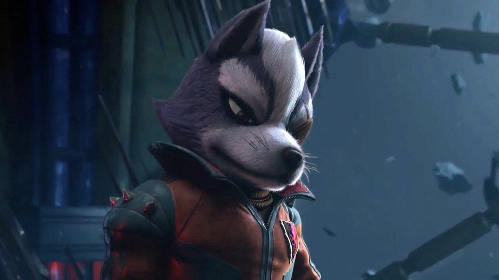
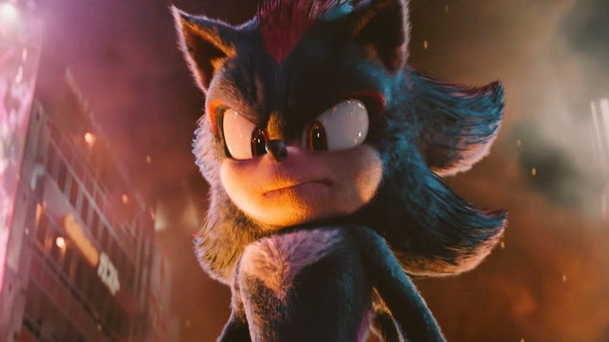

Short Character highlight
Small highlight of some famous video game characters.

Mario
Mario is a heroic plumber from the Mushroom Kingdom
and the main mascot of Nintendo. He first appeared in 1981 in the
arcade game Donkey Kong, where he was called “Jumpman” and worked
as a carpenter before later being reimagined as a plumber. He's a
cheerful character with a red hat and overalls, and his main role
in most games is to protect the Mushroom Kingdom and rescue Princess
Peach from villains like Bowser by running, jumping, and using
power-ups to save the day.

Wolf
Wolf is a space pilot and the leader of Star Wolf
in the Star Fox series. He's usually portrayed as Fox McCloud's
rival and sometimes an enemy, working as a mercenary rather than a hero.
His role is often to oppose Star Fox in space battles, leading his own team
in dogfights and missions that clash with Fox's goals.

Bowser Jr.
Bowser Jr. is the son of Bowser in the Mario series and often
acts as one of Mario's main enemies. He helps his father kidnap Princess
Peach, causes trouble across different worlds, and uses gadgets like his
Junior Clown Car, paintbrush, and various machines. His role is usually
to act as a boss or mini-boss, backing up Bowser and trying to stop Mario
from reaching the end.

Shadow
Shadow the Hedgehog is an anti-hero from the Sonic series,
created as the “Ultimate Life Form.” He has a darker personality than
Sonic and often struggles between doing what's right and following his
own path or past promises. His role usually involves using Chaos Control
and his speed to fight strong threats, sometimes working against Sonic
and sometimes teaming up with him when the world is in danger.

Meta Knight
Meta Knight is a mysterious sword-wielding warrior from
the Kirby series who usually wears a mask and cape. He often appears as
a rival or test for Kirby, challenging him in battle to see if he's strong
enough, but he's not purely evil. His role shifts between opponent and
ally, sometimes leading his ship, the Halberd, into action and other times
helping Kirby face bigger threats.

Machamp
Machamp is a Fighting-type Pokémon known for its four
muscular arms and powerful physical strength. It often appears as a
strong, close-combat battler that excels in punching and grappling moves.
Its role in battles is to act as a tough front-line fighter, using its
strength to overpower opponents and take on heavy hits in return.